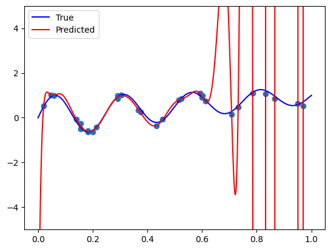
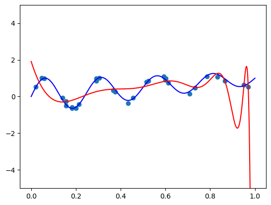
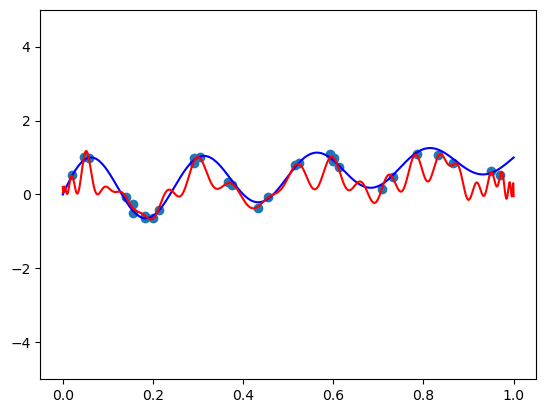
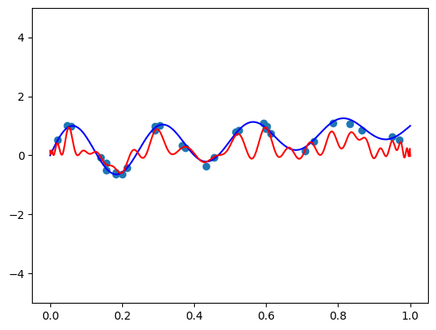
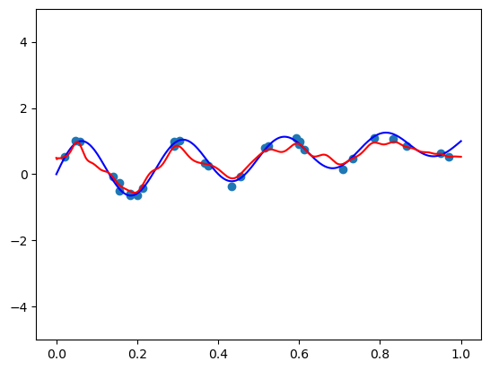
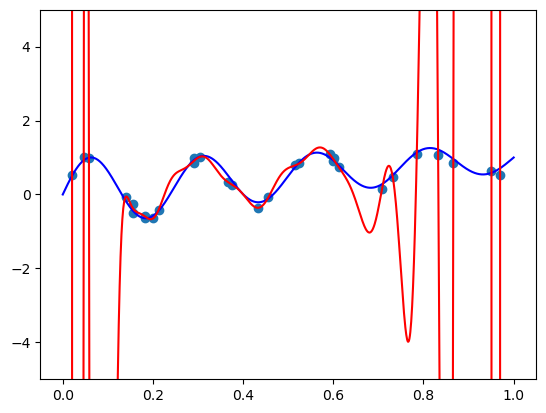
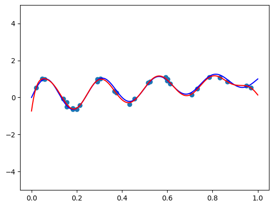
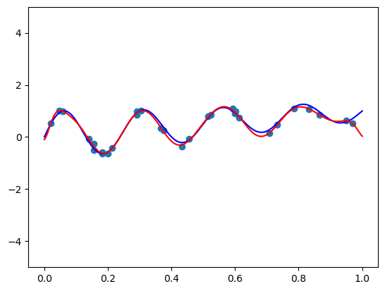

import numpy as np
import matplotlib.pyplot as plt
from sklearn.linear_model import LinearRegression
import numpy.polynomial.polynomial as poly
from sklearn.linear_model import RidgePolynomial Regression with Basis Functions
ML
Tutorial
Reference: https://alexshtf.github.io/2024/01/21/Bernstein.html
1. Simple Polynomial Regression
m = number of data points
n = degree of polynomial
Input: \[\{X_i\}_{i=0}^{m}\]
Target: \[\{y_i\}_{i=0}^{m}\]
Feature Expansion: \[\mathbb{E}_n = {1, x, x^2, ..., x^n}\]
Prediction:
\[\hat{y}_i = \alpha_0 \cdot 1 + \alpha_1 \cdot x + \alpha_2 \cdot x^2 + \cdots + \alpha_n x^n\]
Loss: \[L = \sum_{i=1}^m (\alpha_0 + \alpha_1 x_i + \dots + \alpha_n x_i^n - y_i)^2\]
Feature expanded X:
\[\begin{pmatrix} 1 & x_1 & x_1^2 & \dots & x_1^n \\ 1 & x_2 & x_2^2 & \dots & x_2^n \\ \vdots & \vdots & \vdots & \ddots & \vdots \\ 1 & x_m & x_m^2 & \dots & x_m^n \\ \end{pmatrix}\]Polynomials have different degrees, therefore, different units.
numpy.polynomial.polynomial.polyvandertakes X and expands it to the above matrix.
X = np.array([1, 2, 3, 4])
n = 3X_poly = poly.polyvander(X, deg=n)
print("X: \n", X)
print("\nX_poly:")
X_polyX:
[1 2 3 4]
X_poly:array([[ 1., 1., 1., 1.],
[ 1., 2., 4., 8.],
[ 1., 3., 9., 27.],
[ 1., 4., 16., 64.]])2. Chebyshev polynomials
\[\mathbb{T}_n = \{ T_0, T_1, \dots, T_n \}\]
\[\begin{align*} T_0(x) &= 1 \\ T_1(x) &= x \\ T_{n+1}(x) &= 2xT_n(x) - T_{n-1}(x) \end{align*}\]
- Feature expansion: \[\begin{pmatrix} T_0(x_1) & T_1(x_1) & \dots & T_n(x_1) \\ T_0(x_2) & T_1(x_2) & \dots & T_n(x_2) \\ \vdots & \vdots & \ddots& \vdots \\ T_0(x_m) & T_1(x_m) & \dots & T_n(x_m) \\ \end{pmatrix}\]
- Polynomial \(T_k\) are k-degree polynomials. Therefore, their units are different.
numpy.polynomial.chebyshev.chebvander(X, deg)takes X and expands it to the above matrix.
def chebyshev_polynomial(n, x):
if n == 0:
return 1
elif n == 1:
return x
else:
return 2 * x * chebyshev_polynomial(n - 1, x) - chebyshev_polynomial(n - 2, x)
# Example: Generate and print Chebyshev polynomials T_0(x) to T_4(x) at x = 0.5
x_value = 4
chebyshev_results = []
for i in range(4):
result = chebyshev_polynomial(i, x_value)
chebyshev_results.append(result)
print(x_value)
print(chebyshev_results)4
[1, 4, 31, 244]import numpy.polynomial.chebyshev as cheb
X_poly = cheb.chebvander(X, deg=n)
print("X: \n", X)
print("\nX_poly:")
X_polyX:
[1 2 3 4]
X_poly:array([[ 1., 1., 1., 1.],
[ 1., 2., 7., 26.],
[ 1., 3., 17., 99.],
[ 1., 4., 31., 244.]])3. Legendre polynomials
\[\mathbb{P}_n = \{ P_0, P_1, \dots, P_n \}\]
\[\begin{align*} P_0(x) &= 1 \\ P_1(x) &= x \\ (n+1)P_{n+1}(x) &= (2n+1)xP_n(x) - nP_{n-1}(x) \end{align*}\]
- Feature expansion: \[\begin{pmatrix} P_0(x_1) & P_1(x_1) & \dots & P_n(x_1) \\ P_0(x_2) & P_1(x_2) & \dots & P_n(x_2) \\ \vdots & \vdots & \ddots& \vdots \\ P_0(x_m) & P_1(x_m) & \dots & P_n(x_m) \\ \end{pmatrix}\]
- Polynomial \(P_k\) are both k-degree polynomials. Therefore, their units are different.
numpy.polynomial.legendre.legvander(X, degn)takes X and expands it to the above matrix.
def legendre_polynomial(n, x):
if n == 0:
return 1
elif n == 1:
return x
else:
return ((2 * n - 1) * x * legendre_polynomial(n - 1, x) - (n - 1) * legendre_polynomial(n - 2, x)) / n
# Example usage:
x_value = 4
degree = 3
legendre_results = []
for i in range(degree + 1):
legendre_results.append(legendre_polynomial(i, x_value))
print(x_value)
print(legendre_results)4
[1, 4, 23.5, 154.0]import numpy.polynomial.legendre as leg
X_poly = leg.legvander(X, deg=n)
print("X: \n", X)
print("\nX_poly:")
X_polyX:
[1 2 3 4]
X_poly:array([[ 1. , 1. , 1. , 1. ],
[ 1. , 2. , 5.5, 17. ],
[ 1. , 3. , 13. , 63. ],
[ 1. , 4. , 23.5, 154. ]])4. Bernstein basis
\[\mathbb{B}_n = \{ B_{0,n}, \dots, B_{n, n} \}\]
\[B_{i,n}(x) = \binom{n}{i} x^i (1-x)^{n-i}\] - here, x is probability of success, and i is the number of successes. Therefore, \[0=<x<=1\] - Feature expansion: \[\begin{pmatrix} B_{0,n}(x_1) & B_{1,n}(x_1) & \dots & B_{n,n}(x_1) \\ B_{0,n}(x_2) & B_{1,n}(x_2) & \dots & B_{n,n}(x_2) \\ \vdots & \vdots & \ddots& \vdots \\ B_{0,n}(x_m) & B_{1,n}(x_m) & \dots & B_{n,n}(x_m) \\ \end{pmatrix}\]- Polynomial \(B_{i, n}\) are n-degree polynomials. Therefore, their units are same.
scipy.stats.binom.pmf(i, n, x)gives the binomial coefficient.
from scipy.stats import binom
X = np.array([0.0, 0.5, 0.7])
def bernvander(x, deg):
return binom.pmf(np.arange(1 + deg), deg, x.reshape(-1, 1))
X_poly = bernvander(X, deg=n)
print("X: \n", X)
print("\nX_poly:")
X_polyX:
[0. 0.5 0.7]
X_poly:array([[1. , 0. , 0. , 0. ],
[0.125, 0.375, 0.375, 0.125],
[0.027, 0.189, 0.441, 0.343]])Ridge Regression
- Linear regression with penalty on the weights - ensures that the coefficients \((\alpha_0, \alpha_1, \alpha_2, ..., \alpha_n)\) do not grow too large.
- Ridge coefficients, \(\alpha\) determines the amount of shrinkage:
- \(\alpha = 0\): no shrinkage
- \(\alpha = \infty\): all coefficients are zero
- Note: you will study this in upcoming lectures.
# True function
def true_func(x):
return np.sin(8 * np.pi * x) / np.exp(x) + xm = 30
sigma = 0.1
# generate
np.random.seed(42)
X = np.random.rand(m)
y = true_func(X) + sigma * np.random.randn(m)plt_xs = np.linspace(0, 1, 1000)
plt.scatter(X, y)
plt.plot(plt_xs, true_func(plt_xs), 'blue')
plt.show()
1. Simple polynomial regression
n = 50
X_poly = poly.polyvander(X, deg=n)
X_poly.shape(30, 51)X_poly[0,:]array([1.00000000e+00, 3.74540119e-01, 1.40280301e-01, 5.25406005e-02,
1.96785627e-02, 7.37041123e-03, 2.76051470e-03, 1.03392350e-03,
3.87245832e-04, 1.45039100e-04, 5.43229617e-05, 2.03461285e-05,
7.62044140e-06, 2.85416103e-06, 1.06899781e-06, 4.00382567e-07,
1.49959334e-07, 5.61657868e-08, 2.10363405e-08, 7.87895346e-09,
2.95098417e-09, 1.10526196e-09, 4.13964946e-10, 1.55046480e-10,
5.80711271e-11, 2.17499668e-11, 8.14623516e-12, 3.05109189e-12,
1.14275632e-12, 4.28008087e-13, 1.60306200e-13, 6.00411031e-14,
2.24878019e-14, 8.42258399e-15, 3.15459561e-15, 1.18152261e-15,
4.42527621e-16, 1.65744348e-16, 6.20779076e-17, 2.32506669e-17,
8.70830755e-18, 3.26161054e-18, 1.22160400e-18, 4.57539708e-19,
1.71366976e-19, 6.41838077e-20, 2.40394110e-20, 9.00372384e-21,
3.37225580e-21, 1.26304509e-21, 4.73061057e-22])model = LinearRegression(fit_intercept=False)
model.fit(X_poly, y)LinearRegression(fit_intercept=False)In a Jupyter environment, please rerun this cell to show the HTML representation or trust the notebook.
On GitHub, the HTML representation is unable to render, please try loading this page with nbviewer.org.
LinearRegression(fit_intercept=False)
plt.scatter(X, y) # plot the samples
plt.plot(plt_xs, true_func(plt_xs), 'blue', label='True') # plot the true function
plt.plot(plt_xs, model.predict(poly.polyvander(plt_xs, deg=n)), 'r', label="Predicted") # plot the fit model
plt.ylim([-5, 5])
plt.legend()
plt.show()
Ridge regression with polynomial basis
# Fit a linear model
def fit_and_plot(vander, n, alpha):
model = Ridge(fit_intercept=False, alpha=alpha)
model.fit(vander(X, deg=n), y)
plt.scatter(X, y) # plot the samples
plt.plot(plt_xs, true_func(plt_xs), 'blue') # plot the true function
plt.plot(plt_xs, model.predict(vander(plt_xs, deg=n)), 'r') # plot the fit model
plt.ylim([-5, 5])
plt.show()fit_and_plot(poly.polyvander, n=50, alpha=1e-7)
2. Chebyshev basis
def scaled_chebvander(x, deg):
return cheb.chebvander(2 * x - 1, deg=deg)fit_and_plot(scaled_chebvander, n=50, alpha=1)
fit_and_plot(scaled_chebvander, n=50, alpha=10)
3. Legendre basis
def scaled_legvander(x, deg):
return leg.legvander(2 * x - 1, deg=deg)fit_and_plot(scaled_legvander, n=50, alpha=0.5)
4. Bernstein basis
def bernvander(x, deg):
return binom.pmf(np.arange(1 + deg), deg, x.reshape(-1, 1))fit_and_plot(bernvander, n=50, alpha=0)c:\Users\ryees\anaconda3\envs\pml\Lib\site-packages\sklearn\linear_model\_ridge.py:255: UserWarning: Singular matrix in solving dual problem. Using least-squares solution instead.
warnings.warn(
fit_and_plot(bernvander, n=50, alpha=5e-4)
fit_and_plot(bernvander, n=100, alpha=5e-4)